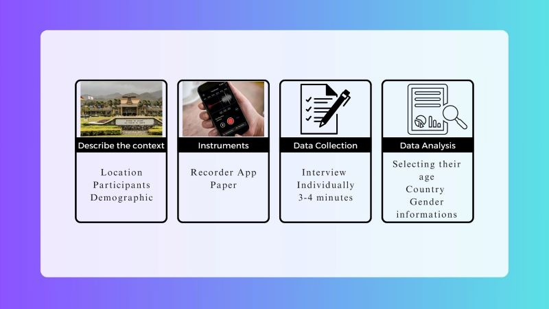
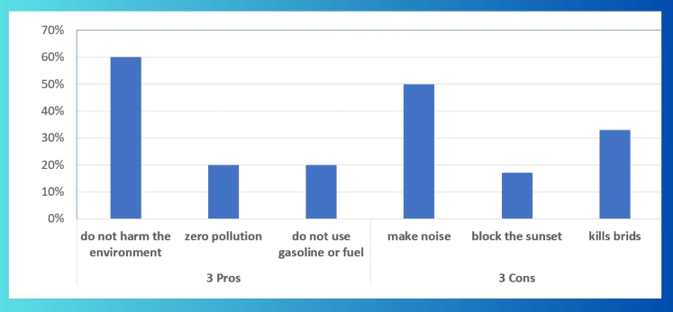

Pros and Cons of the Wind Turbine
Wind Turbine is a huge renewable energy source that employs rotor blades to produce electricity. Nowadays, wind turbines are growing pretty fast in some countries because some people think that using wind turbines has an advantage for the community and environment. In contrast, some students think that many problems namely noise pollution and impact on the environment caused by wind turbines.
Some people consider that wind turbines also cause many problems such as producing noise, the impact on the environment, and scarcity of air to move the blade. For example, people who live in the area of wind turbines have experienced of irritation caused by the noise of wind turbines. Noise generated by wind turbines can cause trouble staying asleep and psychological stress (Bouman, 2012). According to an interview about a family who lives 1600ft from a wind turbine, they have stress and difficulty sleeping at night which also has health implications because the noise can cause vibration within the body (Morgan, 2015). Even though wind turbines do not harm the environment, the hybrid of establishment and maintenance of wind turbines release a parameter of CO2 emission but trees can absorb the CO2 produced (Saidur, 2011). A wind turbine is an environmentally friendly and sustainable energy solution that generates electricity without the need for fuel consumption or causing air pollution (Energy.gov, nd). Using wind turbines helps diminish the use of fossil fuel, is beneficial for the environment, and has zero pollution. ABC News illustrated that the biggest impact on the environment is bird deaths per year estimated between 140,000 to 328,00 caused by wind turbines (ABC News, 2021). Another reason is the blades of wind turbines are huge and rotate at extraordinary speed. Miserably, the blades have the potential to kill birds that fly into them (Marsh, 2022). The scarcity of air can cause wind turbines to stop working or error because winds do not blow all the time despite intermittent nature which leads to some technical issues (Nezhad, 2013). All in all, some people believe that wind turbines have noisy effects on human health, an array of birds are killed, and some technical problems are due to lack of wind.
The purpose of studying this research is to measure the knowledge and viewpoints among BYUH’s students about building wind turbines. Two research questions guide the principle of study. The first question is what knowledge do BYUH students have about wind turbine energy? The second question is what are BYUH students’ views and opinions on promoting wind turbine energy?
Method
I conducted interviews with students in person at Brigham Young University Hawaii (BYUH) campus. The interviews involved 10 participants: 3 females and 7 males. Participants were aged between 17-20 years (40% of respondents) and 21 years and above (60%). The majority (40%) were from the United States, while others came from Japan (20%), and 10% each from Cambodia, Taiwan, China, and Thailand. The survey consisted of five questions designed to assess students' knowledge and opinions about wind turbines.
The results were categorized into two sections: (1) questions on students' knowledge of wind turbine energy and (2) questions about their views and opinions on promoting wind turbine energy. Surveys were conducted in various locations on the BYUH campus, such as Listening Labs, the Cafeteria, and the library. Before conducting the interviews, I prepared printed copies of the survey questions. I approached students during their free time and scheduled appointments with some. Each participant answered the questions individually, with responses recorded using a recording app. Each interview lasted approximately 3-4 minutes. Afterward, I compiled the data, organized it by age, country, and gender, and summarized the survey responses.
Results
BYUH Students' understanding of wind turbine
The outcome of the data showed that BYUH students know wind turbine energy because they could understand clearly the Pros and Cons of wind turbines. They also knew how the wind turbine generates electricity. Based on the results show that BYUH Students expressed three of the Pros and Cons. First, they said wind turbines did not harm the environment (60%). Second, wind turbines had zero pollution (20%). Lastly, wind turbines did not use gasoline or fuel (20%). There are three Cons that BYUH Students provided during the survey. First, wind turbines made noise (50%). Second, wind turbines could block sunset (17%). Lastly, wind turbines could kill birds (33%). According to the survey results, five participants said that wind turbines have pros and the other six participants said wind turbines had cons.
BYUH Students' views and opinions about wind turbines
The results illustrate that the reason that BYUH Students have three reasons to establish the wind turbines.
- Wind turbines are environmentally friendly and fresh air (33%)
- They like wind turbines is because it looks cool when they drive nearby (33%)
- Wind turbines help lower the payment of bills. (34%)
Besides these reasons, some students did not agree with the reasons above. There are three factors against building wind turbines.
- Wind turbines generate power, it makes too much noise (50%)
- Wind turbines are expensive to install (17%)
- Wind turbines block sunset (33%).
According to the result above, there are 40% of participants support establishing wind turbines and 60% of participants oppose building wind turbines.

To improve future survey research. There are a few things that we can change. First, we need to interview at least 50 people individually. It could help us collect more data or get a larger subject to analyze the results because the effectiveness of the results depends on the amount of number of participants. Second, enhancing the quality of the question can have benefits for studying research. For example, some questions can be multiple-choice for participants to choose the answer which is the best answer.